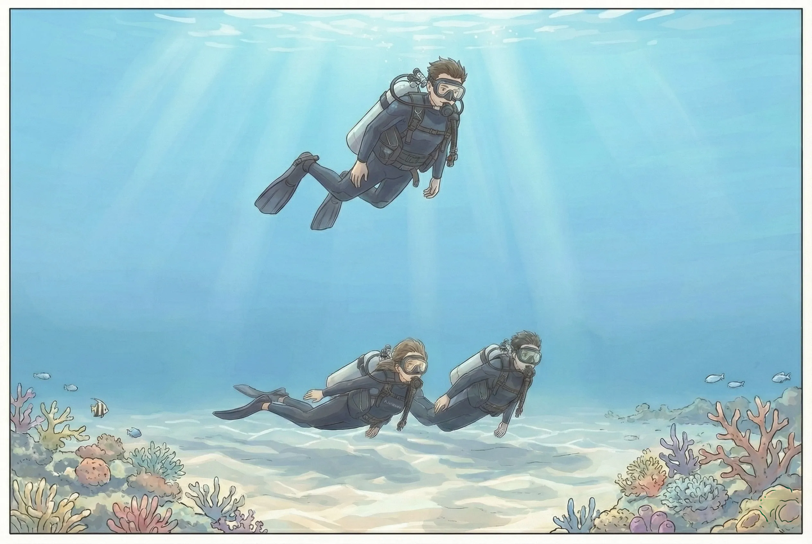

バディダイブ (2)
〜児島さん時代 - NAUI Open Water I の講習から始まる海恋時代 - マニュアル＋αの時代〜
ぼくは 1987 年に NAUI Open Water I の講習を海恋というダイビングショップで受けました。
Open Water I の講習ではバディ・ダイビング・システムについて独立した章で学びます。またバディとはぐれたときの対処法の章もあります。またそれだけではなく、緊急浮上法や潜水計画の章においても、その他の章に置いても頻繁にバディという言葉が登場します。
それくらいにバディ・システムはダイビングで命を失わないためにとても重要なものだと、Open Water I の講習で叩き込まれたといえます。
実際の限定水域とオープンウォーターでの講習では、現在の Open Water の講習と同じく、スキルを中心とした講習が行われていました。
限定水域での講習にせよ、オープンウォーターでの講習にせよ、当時はスキン・ダイビングにもある程度力が入れられていました。スキン・ダイビングでもバディ・システムは維持されなければならず、１人が潜っているあいだは、もう１人は水面で待機し、いつでも潜ってバディをサポートできるように準備しておくことを教わりました。またもし潜水中のバディが拘束されるなどの緊急事態になると、水面で待機していたバディは速やかに潜水し、拘束されているバディの網やロープなどを切断してレスキューするのだと指導されていました。
スキンダイビングのあとに行われたスクーバの講習では、直接バディが関与するのはバディ・チェック、エントリーの協力、エキジットの協力、エア残量の相互チェック、異常な呼吸パターンの相互チェック、アイコンタクトへの異常な反応に対する相互チェック、パニック予防のためのバディへの STOP、THINK、GET CONTROLE、GO の相互指示など、今から考えるとけっこう多岐にわたっていました。
これを今のダイバーが見たら厳しいと思うかも知れません。ですが昔も今も NAUI のコース基準にはやれ、達成せよ、と書かれています。MUST 項目としてリストされています。省略してはいけないものなのです。ダイバー全員が身に着けなければなりません。身につけていないのなら、その人はダイバーとして認定されてはいけないことになっています。
理由はシンプルで「海で死なないため」という理由になります。
また学科ではバディでダイブサイトの情報を収集し、バディで海況を判断し、必要であればバディでスキンダイビングの軽装備でダイブサイトを調査し、バディでダイブテーブルを使って潜水計画を立てて、バディでその潜水がどうであったのか振り返りなさいと記載されています。もちろん学科で学びます。
その頃のぼくのバディは児島さん (仮名) という方で、Open Water I の講習から、ぼくが海恋を離れるまで、ずっとバディを組むことになります。
海恋の常連と呼べるのはぼくと児島さん二人っきりだったのですが、二人が NAUI Open Water I ダイバーとして認定されてからも、ずっと海恋にはお世話になり、ファンダイバーとしてツアーに参加しながら、ぼくと児島さんは海恋の岡村社長 (NAUI インストラクター) と坂下インストラクター (NAUI インストラクター) に、単にダイビングを楽しむだけでなく、都度指導も受けていました。
先に述べた学科で学ぶけれども、実際にダイブサイトでは行われるのが現在では稀な情報収集や、地勢の読み方、海況判断、ダイブサイトの調査、実際の潜水計画、ダイビングの振り返りなどは、ツアー内で教えてもらっていました。本来は Open Water I の講習内で実習として行うのが理想なのでしょうが、受講生的にもスクール的にもスケジュール的にどうしても厳しくなりますし、というよりも講習が永久に終わりませんし、これらはファンダイブ上でないと学べません。
ですからコース基準としてもファンダイブ・ツアーを継続教育と位置づけて、実際にぼくと児島さんも、Open Water I のチェックアウトダイブから、ダイブサイトでのダイビング・サービスへのヒアリングによる情報収集や、ダイブサイトでの海況の実地判断の仕方、実際にバディでの潜水計画立案、水中での海況変化の見方、判断の仕方、など、バディ・ダイビングに必要なさまざまなことを学んでいきます。
そして水中でも、ぼくと児島さんは、必要であればエントリー、エキジットで協力し、お互いのエア残量をモニターし、アイコンタクトをなるべく頻繁にとり、お互いに常に異常がないかモニターし合いながら、珍しい生物や光景があるならお互いに教え合ったりするということをダイビング中は常に行っていました。
またぼくと児島さんがお互いのエア残量を確認して、そろそろ陸に戻るべき、と考えた時点で岡村さんや坂下さんにハンドサインを用いて、そろそろエキジットポイントに向かうべきでは？と言って、全員揃ってエキジットポイントに向かうようなことをしていました。

岡村さんや坂下さんが画像のようにぼくと児島さんを常にモニターし、気がついたことがあれば、ぼくたちはコメントや指導をいただくということを繰り返していました。もちろんぼくたちの上に位置していたというわけではありません。横に付いたり前に付いたりと臨機応変に動いてらっしゃいました。
また指導を受けると言ってもファンダイブなので講習然としたものではありません。楽しみながらバディ・ダイビングに必要な全てを教えていただくって感じでした。
もちろんすぐにバディ・ダイビングができるとは思えなかったので、海恋の岡村さんや坂下さん、やはり後に NAUI インストラクターになる齋原さんの管理下で、バディ・ダイビングを続けるという日々が続きます。